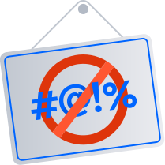
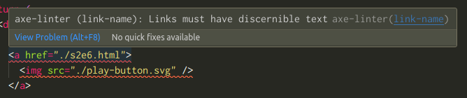
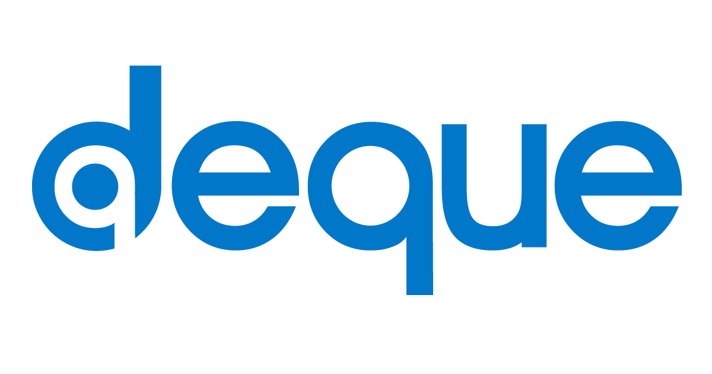
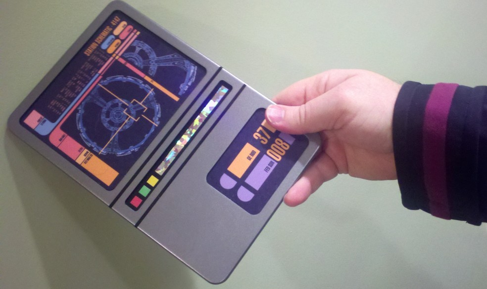

Enterprise Grade
Accessibility for
Everybody

Don’t #@!%
the customer
the customer
- list of tools in approximately the order you would use them - some
of these tools are publicly available and you can just start using
them directly (most of even free) - some of them are amalgamations
of different tools - you'll need to work you what combination you
need for your use case - some are specific things we've built
in-house, but i've included them because the idea scales outside of
atlassian mention that i'm focussing on the dev side of things, but
that accesibility starts with design
accessiblity support portal questions are routed directly to our
central a11y team, so the customer is immediately speaking to
someone who understands things like how to use a screen reader
tickets have a11y-specific SLOs
-
a11y-annotate
-
a11y-assist
-
a11y-foundation
-
a11y-pr-review
- Before producing code, define keyboard/focus flow & names/roles/states
- Add aria-label for icon-only buttons
- Use Atlassian Design System components when available
these skills include a broad range of things, include general a11y
advice, advice for specific elements, and a tonne of stuff that's
very specific to our design system
Background photo of a crew member vacuuming the bridge of the
starship Enterprise from Star Trek.
Linting
- Deque's axe Accessibility Linter
it's important to integrate stuff into your existing workflows to
assure it actually happens easy with automated tooling that fits
into existing build pipelines bit trickier with manual tests

upside/downside only work if you're writing code artisinally,
because coding agents are immune to the effects of red-squiggly
lines
Background photo of a crew member vacuuming the bridge of the
starship Enterprise from Star Trek.
Linting
tests
getByRole()
queryByRole()
findByRole()
screen.getByRole('button', { name: 'Submit' })
TestingLibraryElementError: Found
multiple elements with the role "link"
and name "Play episode"

axe-core
tool from Deque that knows how to take rendered DOM and check it for
accessibility issues list of ~90 rules that are checked
- ✅ color-contrast — elements meet minimum color contrast ratio
- ✅ image-alt — images have alternate text
- label — form elements have associated labels
- ✅ link-name — links have discernible text
- aria-required-attr — required ARIA attributes are provided
- heading-order — heading levels increase by one
only tests page layout/structure, not flow
import { axe, toHaveNoViolations } from "jest-axe"
expect.extend(toHaveNoViolations)
it("is accessible", async () => {
const { container } = render(
<EpisodeList episodes="{mockEpisodes}" />
)
expect(await axe(container)).toHaveNoViolations()
})import { test, expect } from '@playwright/test';
import AxeBuilder from '@axe-core/playwright';
test.describe('homepage', () => {
test('should not have any automatically detectable accessibility issues', async ({ page }) => {
await page.goto('https://your-site.com/');
const results =
await new AxeBuilder({ page }).analyze();
expect(results.violations).toEqual([]);
});
});
Automating axe-core tests
afterEach(() => {
expect(document.body).toBeAccessible()
})
98%
of violations*
by our estimation 93%-98% of violations that can be caught by
automated testing are being caught by automated testing
-
1.4.11Non-text Contrast
-
2.1.1Keyboard
-
3.3.3Error suggestion
there are companies working on using AI to solve some of these
issues, but they're generally getting better at more complex
versions of the what - eg contrast across multiple contexts - while
still struggling with the meaning part
Manual a11y testing
we have an internal team, you can hire a consultancy something we're
trying to automate is what actually gets sent to manual testing

switcheroo + triage for manual testing Atlassian Accessibility
manual audit results basically the ticket gets assigned to the
relevant team, and has a due date there's a process for sending the
ticket to another team if it was incorrectly assigned and also for
retesting once it's fixed similar process to how we deal with
security vulnerabilities, version patches etc
Work with existing systems
it's important to integrate stuff into your existing workflows to
assure it actually happens easy with automated tooling that fits
into existing build pipelines bit trickier with manual tests
| Age | Open issues |
|---|---|
| Older than 6 months | 16,394 |
| 6 months | 962 |
| 5 months | 1,645 |
| 4 months | 1,710 |
| 3 months | 1,733 |
| 2 months | 1,799 |
| 1 month | 1,973 |
| Less than 1 month | 396 |
A11YSCAN pipeline
once a day at 1405UTC
outputs - to dashboard to track violations over time, tickets for fixing critical issues & missing test coverage, tech ops reports
66% ↓ eslint-disableds
25% ↓ new issues
25% ↓ new issues
- automated tools
- expert input
- existing processes
- lean into automated tools as much as possible, they're very cheap
and get you good coverage - if possible, include input from expert
users - trained professionals as well as users with disabilities -
make sure you integrate into existing processes - make it as easy as
possible